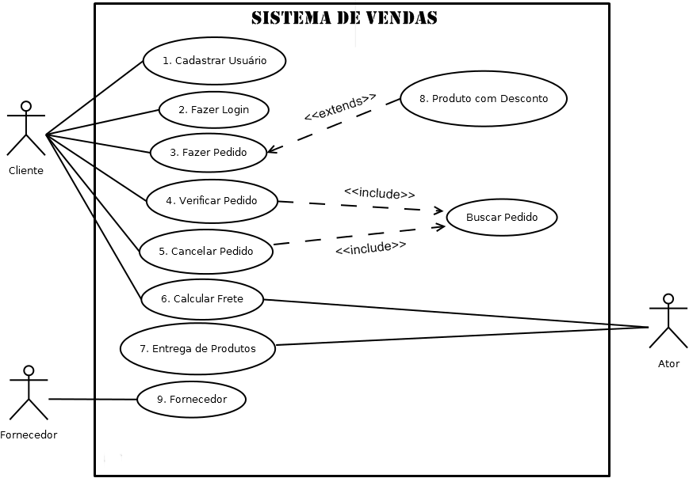
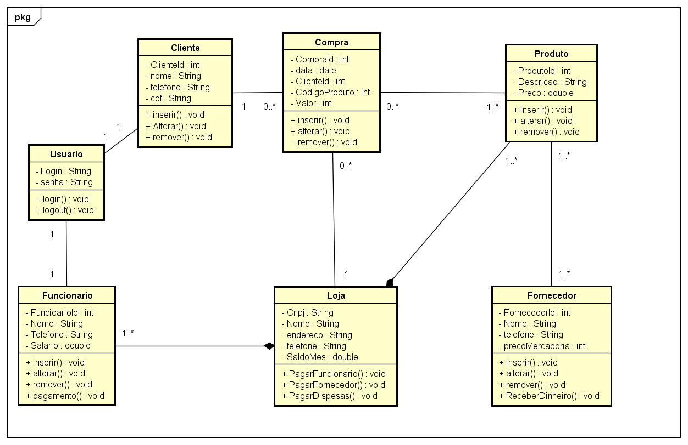
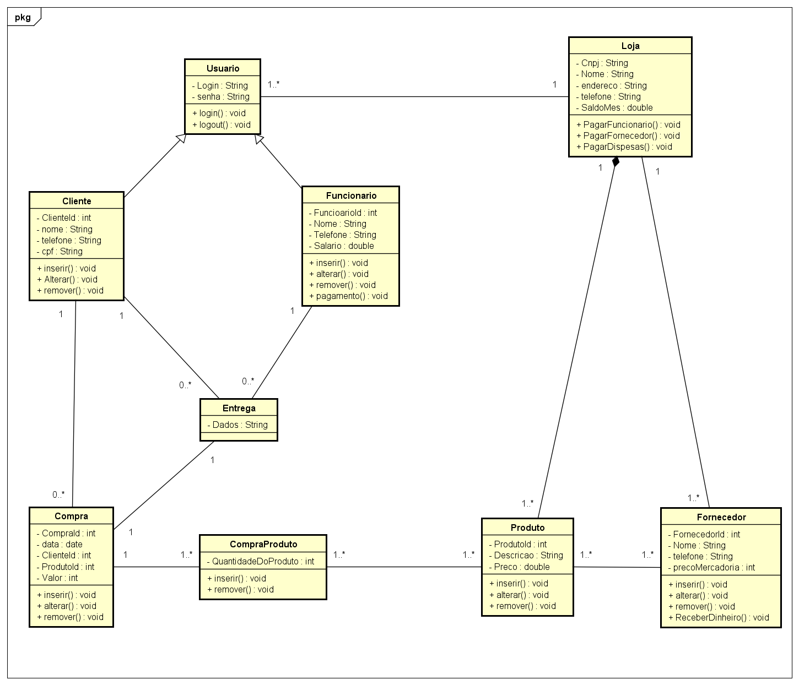

Autoridade Estampas
Descrição do Sistema
O sistema "Autoridade Estampas" é um serviço de venda online da loja "Autoridade Estampas". Ele tem como principal função a venda de camisas da loja e aceita pagamentos tanto no boleto como no cartão. Além disso, o sistema, também contribui para o marketing da mesma, divulgando os novos produtos e seus respectivos preços.
Diagrama de casos de uso

Requisitos Funcionais
Requisitos Não-Funcionais
| Nome |
Expecificação |
| Não sair do Ar |
O sistema deve disponibilizar seus serviços o dia inteiro (24 horas) sem quedas ou falhas. E caso isso aconteça, solucionar o mais rápido possível. |
| Suportar tráfego |
É necessário que o sistema suporte, sem lentidão, muitas pessoas o utilizando e fazendo compras simutâneas |
| Segurança |
O sistema tem que ser seguro, protegendo e não deixando escapar os dados dos usuários e administradores. |
| Responsivo |
É de suma importância que o sistema se adeque aos demais dispositivos: Desktop, smartphone, notbook, tablet. Então ele necessita se adequar as demais telas. |
| Mutiplataforma |
O sistema deve rodar perfeitamente em Windows, Linux, Android e MacOS. |
Diagrama de classes
Diagrama de analise

Diagrama de projeto
